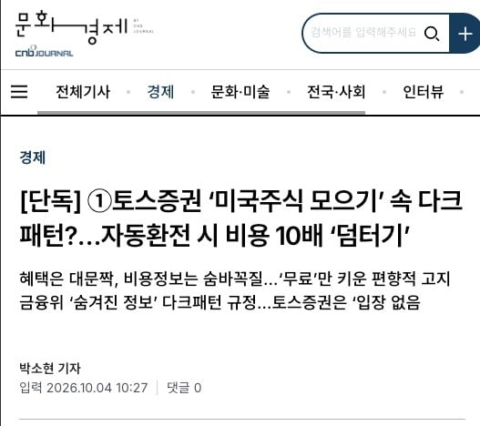
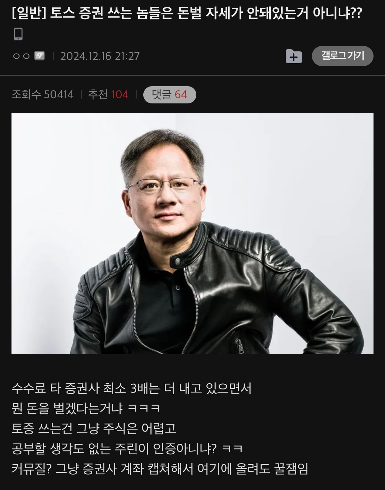
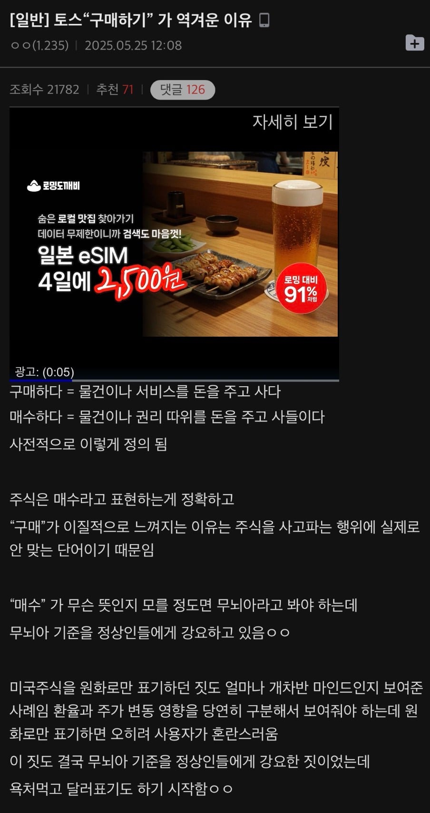
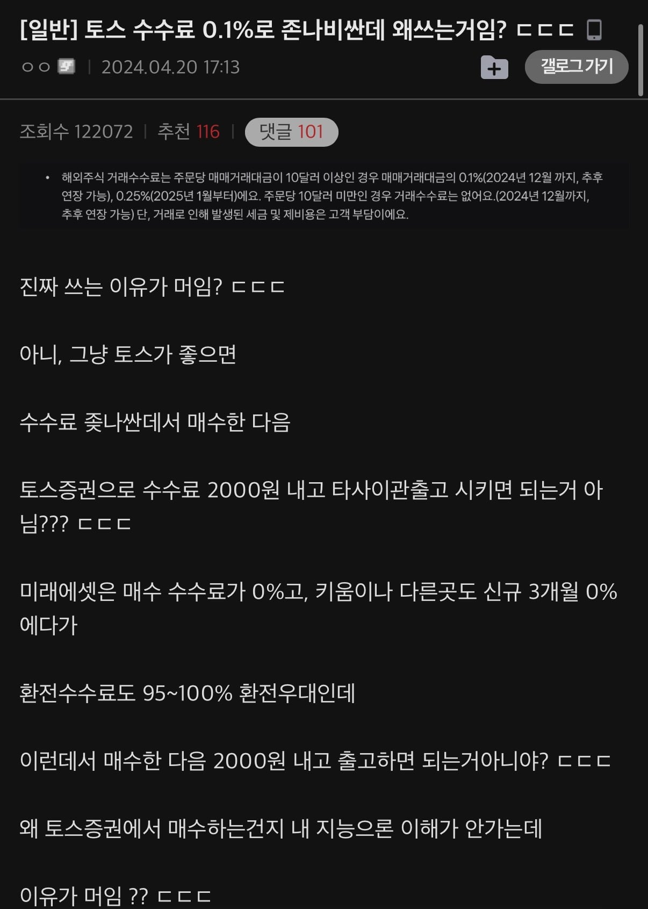

무료수수료, 0.1%거래수수료 면제는 평생무료라고 하면서
자동환전하면 수수료10배 등 꼼수 숨겨놓아서
뉴비들은 이런거 모르고 그냥 씀



옛날부터 유명했는데
기존 주식러들은 주식 안해본 놈들이 만들었다, 없는 기능이 너무 많다는 평에 쓰는사람이 0에 가까운데
UI, 직관성 편하다를 내세워서 신규진입한 뉴비들 돈 빨아먹는중
그냥 빨아먹는것도 아니고 낚시, 악질에 가까운 기능들이 너무 많음
토스증권 이용한다 = 99.9% 빨라야 코로나 이후 주식 시작한 사람들
UI가 개쓰래기라 다른곳 쓰기 힘들더라